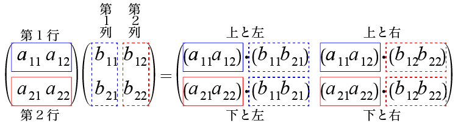

検査行列を用いて符号を定義する方法を厳密に説明すと以下のようになる．
符号$C$ の全ての符号語がランク $n-k$，$n$ 列の行列$H$の 全ての行と直交する場合，$[n,k]$ 線形符号$C$は検査行列$H$で 示される、という．
例 4.1
検査行列
\[
H_1=\left(
\begin{array}{rrrrr}
1&0&1&1&0\\
1&1&1&0&1
\end{array}
\right)
\]
と直交する（内積が0になる）ベクトルは
$\{00000, 00111, 01001, 01110, 10011, 10100, 11010, 11101\}$
である（内積を計算して確認してみよ）．これは符号$C_1$である．
次に行列積を使って検査行列で符号を定義する方法を説明する． 行列の積は図4.1のように定義されている．

図4.1 行列の乗算
行列の積は左側の行列の列数と右側の行列の行数が同じ場合に 定義される．左側の行列は行単位で考え，右側の行列は列単位で考える． 前の条件から左側からとった行ベクトル（図4.1実線で囲んだもの） と右側からとった列ベクトル（図4.1破線で囲んだもの）は 同じ要素数をもつので内積を求めることができる． 左の第 $i$ 行と右の第 $j$ 列の内積が計算結果の $i$ 行 $j$ 列の要素となる．
また，$m$ 行 $n$ 列の行列 \[ A = \left( \begin{array}{rrrr} a_{11} & a_{12} & \ldots & a_{1n}\\ a_{21} & a_{22} & \ldots & a_{2n}\\ \vdots & \vdots & \ddots & \vdots\\ a_{m1} & a_{m2} & \ldots & a_{mn} \end{array} \right) \] の転置を $A^T$ と書く．$A^T$ は $n$ 行 $m$ 列の行列で， 以下のように定義される． \[ A^T = \left( \begin{array}{rrrr} a_{11} & a_{21} & \ldots & a_{m1}\\ a_{12} & a_{22} & \ldots & a_{m2}\\ \vdots & \vdots & \ddots & \vdots\\ a_{1n} & a_{2n} & \ldots & a_{mn} \end{array} \right) \]
符号は検査行列と行列積を使って以下のように定義できる．
$\vec{w}H^T = \vec{0}$ であること はベクトル $\vec{w}$ が $C$ の要素であること の必要十分条件である．
$\vec{w}H^T = \vec{0}$という条件はベクトル $\vec{w}$ が $H^T$ の全ての列と内積が$0$になることをいっている． $H^T$ の第 $j$ 列はもととの $H$ の第 $j$ 行であるから， これは $H$ の全ての行との内積が $0$ ということをいうので このページの始めに書いた検査行列による定義と等しくなる．
このように線形符号は生成行列か検査行列を与えることで 完全に記述できる．
符号 $C$ が生成行列 $G$ で与えられ，検査行列 $H$ で与えられることと， $C^\perp$ が生成行列 $H$ で与えられ，検査行列 $G$ で与えられることは 必要十分条件である．
符号化は情報ビットに冗長ビットを付加する手続きである． ここまで，生成行列の行の和を計算する方法と， パリティ検査方程式による方法を説明した．巡回符号のような特殊な 符号の族では他の符号化法もある．一般に符号化の問題は難しくなく， 復号のほうが難しい問題である．
生成行列 $G$ から生成される符号 $C$ と $G$ の列の順番を入れ替えたものを 生成行列として生成される符号 $C'$ は互いに等価という． 例えば下の $G$ の1列と4列を入れ替え，2列と5列を入れ替え， 3列と6列を入れ替えると $G'$ になるので，$G$ から生成される符号と $G'$ から生成される符号は等価である． \[ G=\left( \begin{array}{rrrrrr} 1&0&0&0&1&1\\ 0&1&0&1&0&1\\ 0&0&1&1&1&0 \end{array} \right) \] \[ G'=\left( \begin{array}{rrrrrr} 0&1&1&1&0&0\\ 1&0&1&0&1&0\\ 1&1&0&0&0&1 \end{array} \right) \]
$[n, k]$ 線形符号 $C$ はいろいろな方法で符号化されるので最初の $k$ ビットがいつも情報ビット位置とは限らないが，どこかの $k$ 個はそうである．$C$ と等価な符号で最初の $k$ ビットが情報ビット位置 のものが存在する．
一般に生成行列が与えられたときに，それらから生成される符号が 等価であること，さらにいうと同じ符号であることさえも 明らかではない．
等価な符号は厳密に同じ誤り訂正特性をもつ．また，等価な符号は 片方が復号できるならもう一方も復号できる．符号語の順番を入れ変えて 復号すればいいからである．等価な符号は基本的に同じ符号である．
$I$ が $k \times k$ の単位行列で $A$ が $k \times (n-k)$ 行列であるとする．$[n, k]$ 線形符号 $C$ の生成行列 $G$ が $G = (I,A)$ の形のとき，$G$ は標準形 という．
例 4.2
$[7, 4]$ ハミング符号の生成行列
\[
G_1 =\left(
\begin{array}{rrrrr}
1&0&0&1&1\\
0&1&0&0&1\\
0&0&1&1&1
\end{array}
\right)
\]
は $3 \times 3$ 行列の単位行列
\[
I = \left(
\begin{array}{rrr}
1&0&0\\
0&1&0\\
0&0&1
\end{array}
\right)
\]
と $3 \times 2$ の行列
\[
A = \left(
\begin{array}{rr}
1&1\\
0&1\\
1&1
\end{array}
\right)
\]
から
\[
G_1 = (I,A)
\]
の組み合わせで作られているので標準形である．
全ての $[n, k]$ 線形符号は等価な $[n, k]$ 符号で標準形の生成行列で 生成されるものが存在する．
標準形の利点は次の定理を使って生成行列から簡単に 検査行列を作ることたできることである．
定理 1
$[n, k]$ 線形符号 $C$ が標準形の生成行列 $G = (I, A)$ をもつとき，
$H = (-A^T, I)$ は $C$ の検査行列である．
ここで $A^T$ は $A$ の転置で $(n-k)\times k$ 行列であり，$I$ は $(n-k)\times(n-k)$
の単位行列である．
証明 生成行列の行と検査行列の行の内積が必ず $0$ になることからいえる． お互いの第1行の内積行だけを確認する． \[ G = (I,A) \] の$I$の部分は $k \times k$ の単位行列で \[ I = \left( \begin{array}{rrrr} 1&0&\ldots &0\\ 0&1&\ldots &0\\ \vdots &\vdots &\ddots &\vdots\\ 0&0&\ldots &1\\ \end{array} \right) \] $A$の部分は $k \times (n-k)$ 行列で \[ A = \left( \begin{array}{rrrr} a_{11} & a_{12} & \ldots & a_{1,n-k}\\ a_{21} & a_{22} & \ldots & a_{2,n-k}\\ \vdots & \vdots & \ddots & \vdots\\ a_{k1} & a_{k2} & \ldots & a_{k, n-k} \end{array} \right) \] とする．$G$ のランクは $A$ の行数から $k$ であり， $H$ のランクは $-A^T$ の行数すなわち $A$ の列数から $n-k$ である． $G$の第1行を $\vec{g_1}$ と書くと， \[ \vec{g_1}=(1,0,\ldots,0,a_{11},a_{12},\ldots,a_{1,n-k}) \] である．$H$ の第1行を $\vec{h_1}$ とすると定理 1 から， \[ \vec{h_1}=(-a_{11},-a_{21},\ldots,-a_{k1}, 1,0,\ldots,0) \] である．この内積は， \[ \vec{g_1}\cdot \vec{h_1} = -a_{11} + a_{11} =0 \] である．他の行も同様に内積が 0 になる．
例 4.3
例4.2
の $3 \times 5$ 行列 $G_1$ は $3\times 3$ 行列の $I$ と $3 \times 2$ 行列 $A$ を使って
$G=(I,A)$の形になっているので標準形である．このとき，$GF(2)$ では $-1 = 1$であることに注意すると
検査行列の $-A^T$ の部分は $2 \times 3$ 行列
\[
-A^T = \left(
\begin{array}{rrr}
1&0&1\\
1&1&1
\end{array}
\right)
\]
であり，$I$ の部分は $2 \times 2$ 行列
\[
I = \left(
\begin{array}{rr}
1&0\\
0&1
\end{array}
\right)
\]
なので，
\[
H_1 = (-A^T, I) =
\left(
\begin{array}{rrrrr}
1&0&1&1&0\\
1&1&1&0&1
\end{array}
\right)
\]
で $C$ の検査行列（の一つ）が求められる．
\[
G=\left(
\begin{array}{rrrrrr}
1&0&0&0&1&1\\
0&1&0&1&0&1\\
0&0&1&1&1&0
\end{array}
\right)
\]
を生成行列とする符号の検査行列を求めよ．
授業の6日後までにメールで提出せよ．
メールの件名（サブジェクト）は CT04 とせよ．